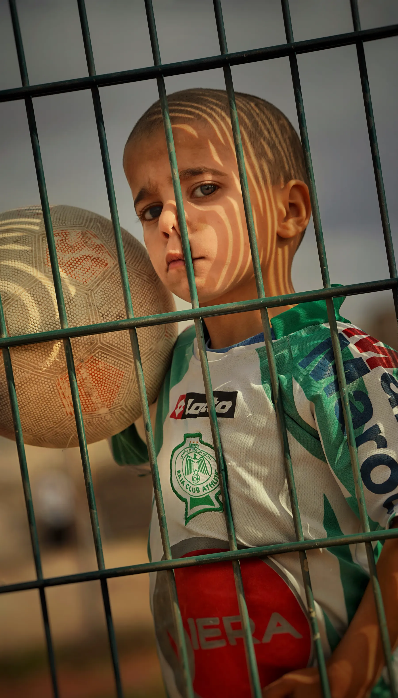
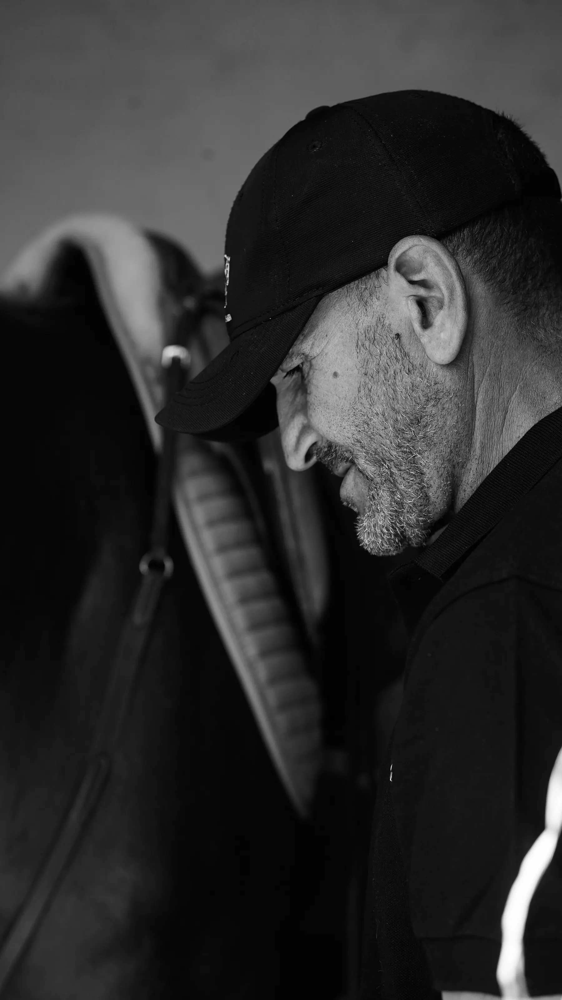

Portraits
Natural, expressive portraits that feel like you, from quiet individual sessions to considered editorial work.
PHOTOGRAPHY & VIDEOGRAPHY.
Kajja
Oussama
Fine art photography and videography capturing quiet moments,
honest faces and faraway places across 25+ countries

Light, silence and the in-between moments.
I’m Oussama, a photographer and videographer based in Safi, drawn to the quiet poetry of everyday life. For nearly a decade I’ve travelled with a camera to tell stories of people, places and the fleeting light that connects them. My work blends documentary honesty with a cinematic eye — whether it’s an intimate wedding, a fashion editorial or a remote landscape at the edge of the world.
Portrait
Wedding
Fashion Editorial
Travel
Fine Art Landscape
2+
YEARS EXPERIENCE
100+
PROJECTS
25+
COUNTRIES
A selection of quiet frames, honest faces and places in between.




Images with a point of view.
Thoughtful visual direction for people, places and brands with a story worth remembering.
Natural, expressive portraits that feel like you, from quiet individual sessions to considered editorial work.
An honest visual record of the people, details and fleeting moments that make your day entirely yours.
Cinematic campaign imagery for fashion, hospitality and independent brands ready to stand apart.
Place-led photography and videography that bring the atmosphere and human texture of a destination into focus.
Let’s make something honest.
Tell me about your story, your place or the feeling you want to keep. I’d love to hear what you’re working on.